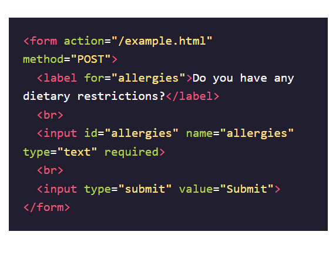
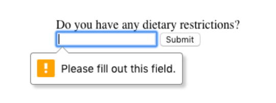

Pra que server a validação?
Você já se perguntou como uma página de login realmente funciona? Ou por que a combinação de nome de usuário e senha concede acesso a um site? As respostas estão na validação. Validação é o conceito de verificar os dados fornecidos pelo usuário em relação aos dados necessários.
Existem diferentes tipos de validação. Um tipo é a validação do lado do servidor, isso acontece quando os dados são enviados para outra máquina (normalmente um servidor) para validação. Um exemplo desse tipo de validação é o uso de uma página de login. O formulário na página de login aceita a entrada de nome de usuário e senha e, em seguida, envia os dados a um servidor que verifica se o par corresponde corretamente.
Por outro lado, usamos a validação do lado do cliente se quisermos verificar os dados no navegador (o cliente). Essa validação ocorre antes que os dados sejam enviados ao servidor. Navegadores diferentes implementam a validação do lado do cliente de maneira diferente, mas leva ao mesmo resultado.
Compartilhados entre os diferentes navegadores estão os benefícios de usar a validação do lado do cliente embutida do HTML5. Isso nos economiza tempo de ter que enviar informações ao servidor e esperar que o servidor envie a confirmação ou rejeição dos dados. Isso também pode nos ajudar a proteger nosso servidor de códigos ou dados mal-intencionados de um usuário mal-intencionado. Também nos permite dar feedback rapidamente aos usuários sobre campos específicos, em vez de fazer com que eles preencham um formulário novamente se os dados inseridos no formulário forem rejeitados.
Atributo Required
Às vezes, temos campos em nossos formulários que não são opcionais, ou seja, deve haver informações fornecidas antes de podermos enviá-las. Se quiser fazer a obrigação de um campo ser preenchido, podemos usa o atributo required no input.
 O estilo da mensagem varia de navegador para navegador, a imagem acima mostra a mensagem em um navegador Chrome. Também continuaremos mostrando essas mensagens à medida que aparecem no Chrome em exercícios posteriores.
Defina um mínimo e um máximo
Outra validação embutida que podemos usar é atribuir um valor mínimo ou máximo para um campo de número, por exemplo, type="number" e type="range". Para definir um valor mínimo aceitável, usamos o minatributo e atribuímos um valor. Por outro lado, para definir um valor máximo aceitável, atribuímos maxum valor ao atributo.